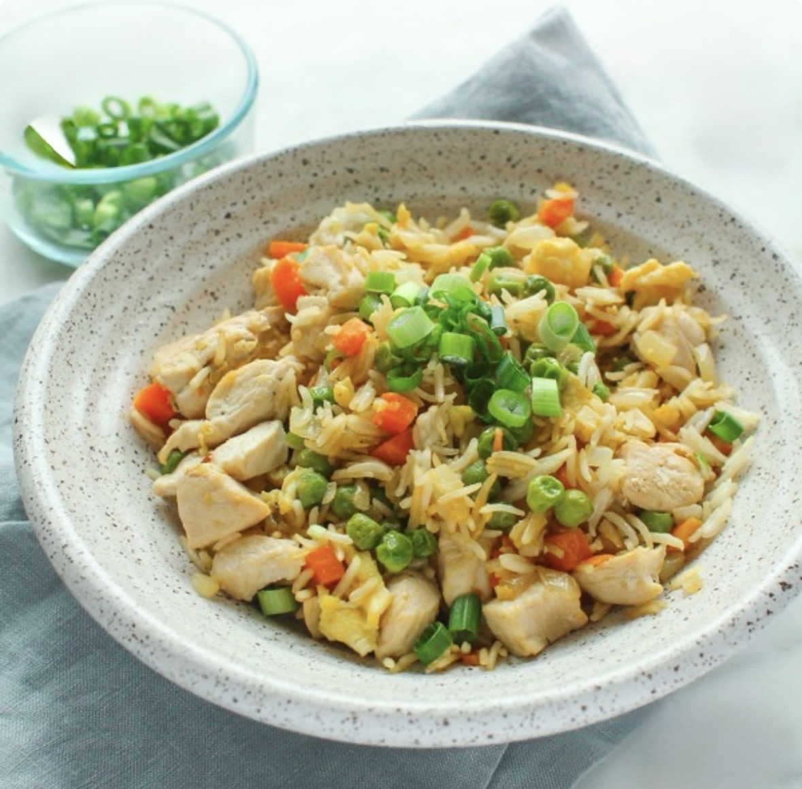

Ingredients
- 2 tablespoons sesame oil
- 2 tablespoons canola or vegetable oil, (I've used olive oil too)
- 1 pound boneless skinless chicken breasts, diced into 1/2-inch pieces
- 1 ½ cups frozen peas and diced carrots blend, (I don't thaw and use straight from the freezer; optionally add 1/2 cup frozen corn as well)
- 3 green onions, trimmed and sliced into thin rounds
- 2 to 3 garlic cloves, finely minced
- 3 large eggs, lightly beaten
- 4 cups cooked rice, (I use white long-grain rice, brown may be substituted. To save time use two 8.8-ounce pouches cooked and ready-to-serve rice)
- 3 to 4 tablespoons low-sodium soy sauce
- salt and pepper, optional and to taste
Instructions
- To a large non-stick skillet or wok, add the oils, chicken, and cook over medium-high heat for about 3 to 5 minutes, flipping intermittently so all sides cook evenly. Cooking time will vary based on thickness of chicken breasts and sizes of pieces.
- Remove chicken with a slotted spoon (allow oils and cooking juices from chicken to remain in skillet) and place chicken on a plate; set aside.
- Add the peas, carrots, optional corn, green onions, and cook for about 2 minutes, or until vegetables begin to softening, stir intermittently.
- Add the garlic and cook for 1 minute, stir intermittently. Tip: If you like the flavor of ginger, add 1/2 teaspoon ground ginger or freshly grated ginger along with the garlic.
- Push vegetables to one side of the skillet, add the eggs to the other side, and cook to scramble, stirring as necessary.
- Add the chicken back in, add the rice, evenly drizzle with soy sauce, and stir to combine, making sure toss and flip the rice so it evenly absorbs the soy sauce. Cook for about 2 minutes, or until chicken and rice are through. Taste, check for seasoning balance, and if desired add the optional salt and pepper to taste, and serve.